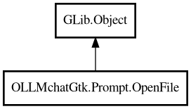

OpenFile
Object Hierarchy:

Description:
public class OpenFile : Object
Represents an open file in the editor.
Tracks file information and provides access to file contents, cursor position, selected code, and other editor state.
Content:
Properties:
- public bool active { get; set; }
Whether this file is currently active.
- public ulong active_monitor_id { get; set; }
Signal handler ID for the active property monitor.
- public string filename { get; construct; }
The file path.
- public View? sourceview { get; set; }
Reference to the GTK SourceView widget (or null if not yet connected).
Creation methods:
- public OpenFile (string filename)
Constructor.
Methods:
- public string get_contents (int max_lines = 0)
Gets file contents, optionally limited to first N lines.
- public int get_cursor_position ()
Gets the current cursor position (line number).
- public string get_line_content (int line)
Gets the content of a specific line.
- public int get_line_count ()
Gets the total number of lines in the file.
- public time_t get_mtime ()
Gets the file modification time from the filesystem.
- public string get_selected_code ()
Gets the currently selected text (only valid for active file).
Inherited Members:
All known members inherited from class GLib.Object
- @get
- @new
- @ref
- @set
- add_toggle_ref
- add_weak_pointer
- bind_property
- connect
- constructed
- disconnect
- dispose
- dup_data
- dup_qdata
- force_floating
- freeze_notify
- get_class
- get_data
- get_property
- get_qdata
- get_type
- getv
- interface_find_property
- interface_install_property
- interface_list_properties
- is_floating
- new_valist
- new_with_properties
- newv
- notify
- notify_property
- ref_count
- ref_sink
- remove_toggle_ref
- remove_weak_pointer
- replace_data
- replace_qdata
- set_data
- set_data_full
- set_property
- set_qdata
- set_qdata_full
- set_valist
- setv
- steal_data
- steal_qdata
- thaw_notify
- unref
- watch_closure
- weak_ref
- weak_unref